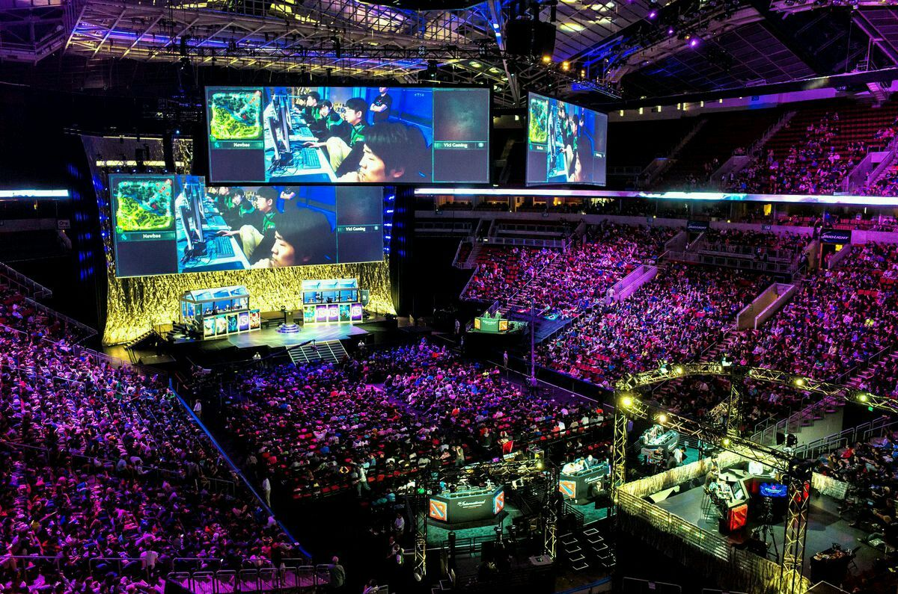

Mecânicas e Convidados
Para inovar a franquia, o jogo introduziu novas mecânicas como as Rage Arts (movimentos especiais cinematográficos que podem ser ativados quando a barra de vida está baixa) e os Power Crushes (ataques que absorvem dano médio e alto sem interromper o golpe do jogador). Isso tornou as partidas muito mais imprevisíveis e emocionantes de assistir.
Outro grande destaque do lançamento foi a introdução de lutadores convidados de outras franquias famosas. Entre os personagens mais marcantes que entraram no torneio King of Iron Fist, estão:
- Akuma (da franquia Street Fighter)
- Geese Howard (da franquia Fatal Fury/The King of Fighters)
- Noctis Lucis Caelum (de Final Fantasy XV)
- Negan (da série The Walking Dead)
- Leroy Smith (personagem original do jogo)
